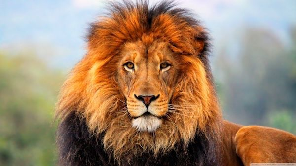

LIONS
The lion is a large cat of the genus Panthera native to Africa and India. It has a muscular, broad-chested body,short,rounded head,round ears, and a hairy tuft at the end of its tail. It is sexually dimorphic;adult male lions are larger than females and have a prominent mane. It is a social species, foriming groups called "prides". A lion's pride consists of a few adult males, related females, and cubs.
The lion inhabits grasslands, savannas and shrublands. It is usually more diurnal than other wild cats, but when persecuted, it adapts to being active at night and a twilight.
Lions are carnivores , which means they are animals that only eat meat.
WHERE WILL YOU FIND THEM?
You will find the lions deep inside the lost forest.